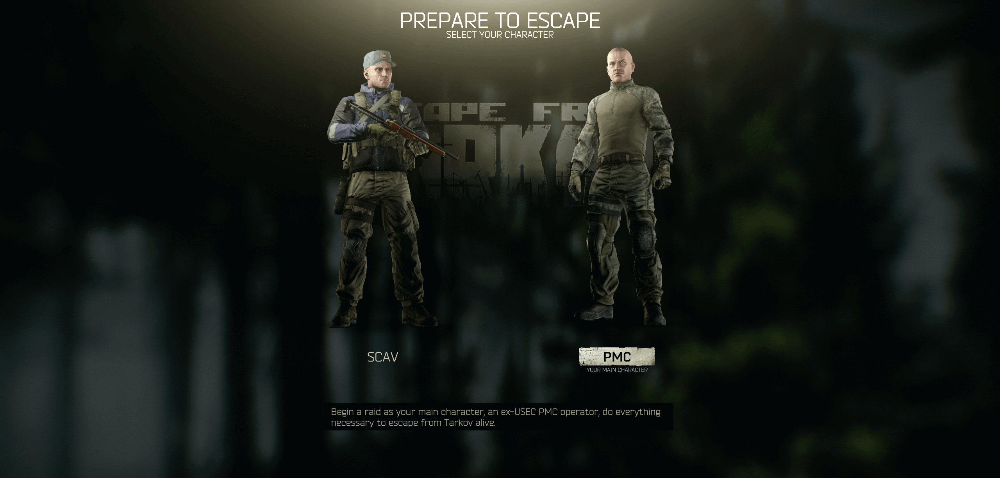
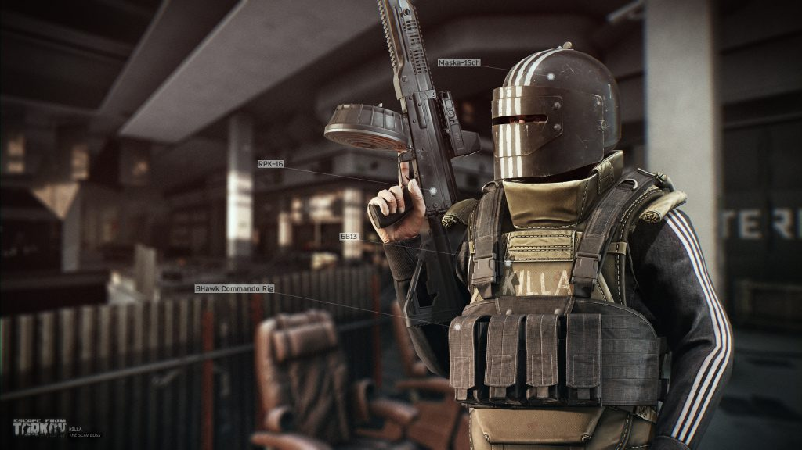

A hardcore and realistic online first-person action RPG with MMO features developed by Russian Saint-Petersburg-based game developer, Battlestate Games. Set in the fictional Norvinsk region located on the frontier between Russia and Europe, the metropolis of Tarkov was plunged into anarchy thanks to the Contract Wars. What was once a bustling city, is now roamed by rivalling scavenger gangs, former private military forces, and black ops units. Between them all, there's you, your stash, and the escape back to the free world from the depths of Tarkov.
There are 4 types of characters moving around the land of Tarkov:
These are exclusively other players that you will encounter on your adventures. You wil have to compete with them to complete quests are well as for the loot that are in the maps. There are two factions

These can either be NPCs or other players. They will have less than ideal equipment and weapons that are roam each of the maps. While they can seem less dangerous then pmcs if they catch you off guard you can pay a big price.
They will exclusively be NPCs but use more advance tactics as well as weapons and gear. They will use movement as well as grenades to try and out flank you and cause you to move out in the open to defeat your PMC.
They are the most dangerous NPCs in the game. They are equipped with good weapons and armor that can devastate most PMC if they get the chance. They are not only dangerous by themselves but they will typically have 2-7 raiders as guards so you will be in quite the battle if you encounter them. Currently there are 5 bosses in the game
Each will be on a specific map but will have a random spawn chance so you will never know when to expect to see them.